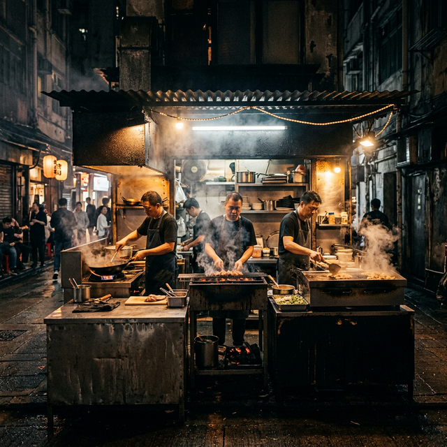

Three cooking methods. One tight setup. FSG Canteen runs a fryer, a steamer, and a grill. All side by side in a triangle so nothing travels too far and nothing waits long. You order. It's made. It goes to you.
The fryer runs hot and stays hot. Chicken. Pork. Onion rings. Fries. Everything that goes in comes out with a crust. That's what this station does and it's confident about it.
The steamer is slower but it earns it. Gyoza with the skin still soft. Rolls with the right give. Rice that's actually cooked. Nothing super fancy, just done properly.
Open flame. Nice char on beef. Sausage with the perfect flavor. Chicken that's been over the fire long enough to practically taste it. The grill is the loudest station and probably the one you smell first.
Most food setups are a line. You wait at one end, food comes out the other. FSG runs a triangle. Three stations facing each other, run by the same hands, feeding off the same fire.
It's a much tighter space, but that means faster handoffs. A fried chicken order and a grilled sausage can happen at the same time without anyone moving. The gyoza finishes while the beef chars. Nothing, and no one wastes time.
The triangle isn't a design choice. It's how the food gets to you faster.